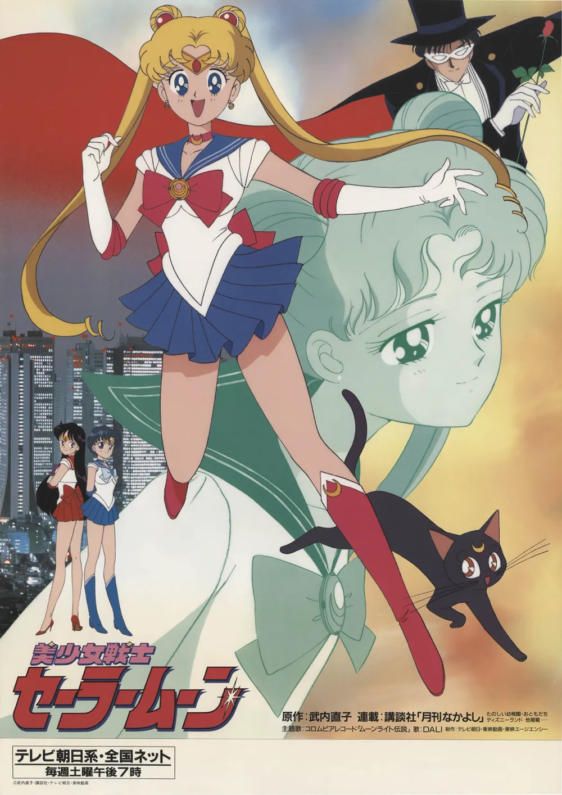
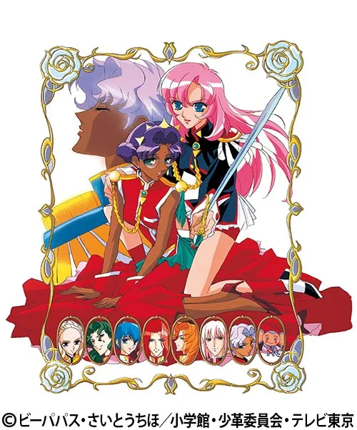

영웅과 역할을 다시 묻다
기존 장르 문법의 재구성과 내면적 서사의 결합 (1990s)

1. 『세일러 문』 (1992)
수동적 구원 대기
➔
주체적 팀 전투
- 마법소녀물에 특촬물의 '팀 단위 물리적 전투' 결합.
- 수동적 공주를 거부하는 주체적 전사상 및 젠더 역할 전복.

2. 『소녀혁명 우테나』 (1997)
왕자와 공주
➔
젠더 규범 재검토
- '왕자-공주-구원'이라는 전통적 서사 규범을 정면으로 재검토.
- 전통적 역할극의 해체를 통해 능동적 주체를 탐구.

3. 『신세기 에반게리온』 (1995)
열혈 용사
➔
심리적 상처와 고뇌
- 영웅의 의무, 타인과의 관계, 파편화된 현대 청년의 인정 욕구를 로봇물 안에서 탐구.
- AT 필드: '타인에게 다가고 싶지만 상처받기는 두려운 마음'을 나타내는 심리적 단서.